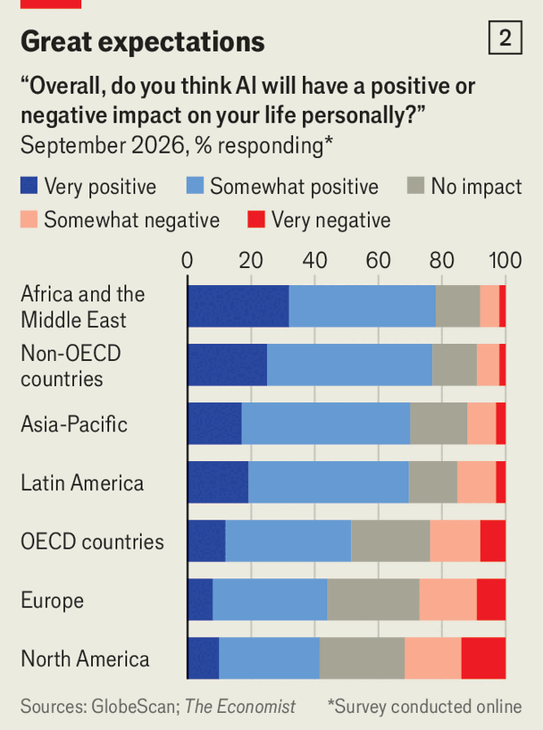

只看西方媒体的标题，会觉得对 AI 的反弹正在全球迅速蔓延。但到目前为止，并没有。民意机构 GlobeScan 为《经济学人》做的调查显示，近三分之二的韩国人和裴先生一样对 AI 抱乐观态度。在富裕国家之外，这种好感更强：尼日利亚和越南都有近九成人说，AI 不仅会改善自己的生活，也会改善全人类的处境。
这项覆盖 34 国的调查在网上进行，可能让态度偏向 AI。但同一调查中，富裕西方国家的情绪阴沉得多。在美国、加拿大和法国，对 AI 未来影响持负面看法的人多于正面。其他西方国家的净情绪为正，但远不如贫穷世界。盖洛普与微软合作、覆盖 37 国的另一项调查得出类似结果：AI 广受欢迎，但在富裕西方国家没那么受欢迎。
为什么西方与世界其他地方有这道沟？随着更多穷国的人直接接触 AI 或数据中心，看到这项技术让一些人受益更多、另一些人受损，部分乐观可能会降温。微软的一项研究显示，2026 年第二季度约 9% 的肯尼亚劳动年龄人口用过 AI；但 85% 的人告诉 GlobeScan，这会让他们过得更好。

chart: the economist
不过，穷国富国都有不少人对 AI 的坑至少有点模糊的意识。皮尤研究中心的调查里，韩国人（与澳大利亚人并列）最倾向于认为 AI 会造成大规模失业、加剧不平等。只是目前，这类恐惧似乎被对技术前景的好奇压住了。
一部分解释是：最富裕国家之外，许多劳动者在 AI 面前失去的东西比西方同行少。贫穷世界的大量工作是零散的非正规就业，与西方的工作相比更不安稳。「丢掉一份稳定的办公室工作」更像是富国的烦恼（不过在印度，IT 和其他后台岗位看起来确实容易被冲击）。
贫穷世界也能从 AI 里得到很多。在制度和正规教育可能不足的国家，AI 帮一些人自己帮自己。「悲观是有钱人才付得起的特权，」《从悲观到希望》一书的作者帕亚尔·阿罗拉（Payal Arora）说，那本书写的就是对技术的态度为何分化。
相比之下，西方对 AI 的悲观，或许反映了人们的感受：自己的生活没有变好多少、AI 可能让它更糟，而政客靠不住、不会保护他们的利益。《技术治理》一书作者丹尼尔·多布里戈夫斯基（Daniel Dobrygowski）认为，这种态度被人们对社交媒体和科技巨头的经验染了色——西方政府一直没能管住它们。
政客和企业谈 AI 的方式也可能有影响。美国实验室的老板们在冲向「通用人工智能」时，警告失业与人类灭绝。亚洲的政客和科技老板很少这么讲，部分原因也许是自己没在做前沿能力。他们更愿意谈 AI 的实际用途——用它做什么，而不是它会对自己做什么。你不太可能听到三星的老板公开谈 AI 末日。
在 AI 取得重大进展的中国，官员确实担心风险，从网络安全威胁到经济失序。但官方媒体的总体调子是打气的。
不过，若因此认为 AI 乐观国家的人毫无忧虑，就错了。有些人更多是把技术进步当作无法回避的命运来接受。「AI 的冲击可能和以往每次转变都不同。但地球有自己的节律，」北京的孟女士说，「不该你活的时候，你就活不下去。你总不能天天担心，对吧？」
首尔国立大学的赵圭镇（Cho Kyu-jin）认为，韩国人尽管有担忧仍拥抱 AI，是因为「害怕被落下的程度，高于害怕失去稳定」。40 岁的劳动法律师金雅兰（Kim Ah-ran）说：「工业革命带来变化时，有正面也有负面。我们总会找到活法。」在首尔郊外的 Galaxy Robot Park，她的小儿子一边模仿正在练泰拳动作的人形机器人，一边抱着一本讲如何用 AI 给这类机器人编程的练习册。
这种务实的接受说明，裴先生那样的积极态度仍可能是脆弱的。科技大学 KAIST 的金正南（Kim Jeong-nam）是韩国总统国家人工智能战略委员会的成员。他认为韩国人的容忍是有条件的，条件是政策「做得像样」。如果 AI 开始「造出看得见的输家」，比如在考试公平或就业上，他担心这份宽容会消失。别处大概也一样。「你怎么发明一个会骑摩托车的 AI？」巴西圣保罗的送货司机安德森·桑托斯（Anderson Santos）问——随后听到「无人驾驶汽车」这个词时，他显得很不安。
世界其他地方也出现了数据中心反弹的苗头，尽管远不如美国许多地方那种彻底的反抗。在菲律宾，有人上街反对「Pax Silica」——一个由美国主导、发展 AI 与半导体供应链的倡议。在孟买附近的塔那市，数百人抗议亚马逊计划在他们社区建的超大规模数据中心。不过愤怒还没到吞噬一切的程度。「就跟别的工厂一样，」一位居民说，「AI 是未来。」■
并非人人都被说服。Google DeepMind 的 AI 研究员尼尔·南达（Neel Nanda）担心，虽然可能弄懂某个神经元的一部分功能，但要保证看到全貌很难。比如那个识别尖东西的神经元，可能在与「袜子」神经元同时激活时，构成一个接管世界的计划的一部分。现在也还太早，无法判断坎马拉塔的方法能否扩展到由数百万神经元组成的前沿模型。就目前而言，它只是 AI 阴云中的一线微光。■
自学成才者会格外受欢迎，因为雇主在员工培训上的支出，正处于十多年来最低水平。只有少数热心的公司提供像样的 AI 课程。物流公司 Evri 是其中之一，办公室墙上印着苹果联合创始人史蒂夫·乔布斯的名言。在英格兰北部巴恩斯利郊外的产业园区，白领们围坐在笔记本电脑前——这是一场由 Multiverse 讲师带领的「黑客马拉松」，那位讲师钟爱变革管理理论。午餐是香肠卷和苏格兰蛋，饭前饭后，各小组清理数据集、用 AI 做优化包裹配送的练习，最后以汇报 AI 生成的演示文稿收尾。聪明的年轻人自己就能干这些事。
但独自一人时，软技能更难练——而在 AI 时代，沟通、判断和团队建设也许恰恰是最该培养的品质。领英的数据显示，其平台上销售类岗位最被看重的技能是维护客户关系；相比之下，AI 素养只排第五。此外，领英全球政策负责人苏·杜克（Sue Duke）指出，如果和公司内部已有人认识，求职成功的概率是其他人的七倍。换句话说，「会来事」的重要性，几乎和坎贝尔那年头一样。
对没亲眼见过加州湾区 AI 圈的人，很难形容那有多怪。最近一场叫 The Curve 的会议，议题包括「把机器人管住的方案是什么」和「神经前沿：当 AI 能读你的心会发生什么」。人们躺在沙发和凉亭里，喝着冷萃和康普茶，讨论那些即将靠上市暴富的 AI 公司员工该怎么安排慈善捐赠——与此同时，其中一些人正在暗中设法拖慢自己的雇主，好让文明剧变来得晚一点。